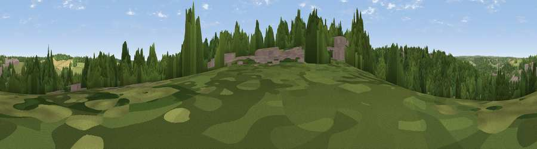

Viewpoint near Chesham Bois
#44827 in England · top 84% of its area beats it · near Chesham BoisWhere it is
The exact computed spot (SU 96825 99825). Click the marker for map links.
The view, rendered

A 360° render of this exact spot computed from the terrain model, tree cover and land cover — summer colours, afternoon light, calibrated against photographs of famous viewpoints. Real trees, hedges and buildings will differ in detail.
The panorama
Grey silhouette: terrain skyline in each direction (720 bearings, Earth curvature and refraction included). Dashed green: skyline with trees (+15 m) and buildings (+8 m) as obstacles. Blue strip: how far the ground is visible on each bearing.
Where the view opens
Wedge length = distance to the farthest visible ground on that bearing (vegetation-aware). Rings at 10, 25 and 50 km.
What fills the view
51% woodland · 32% grassland · 12% built-up · 5% cropland
Angular shares of the visible panorama (visual magnitude), not map area. Landscape diversity 0.49 (0–1 Shannon).
Key numbers
More beautiful places nearby
The staircase of upgrades: each row has a higher view potential than everything closer. Driving times are estimates from straight-line distance, calibrated against real road routing — check an actual route before setting out.
| Place | Direction | Drive | Score |
|---|---|---|---|
| Viewpoint near Chesham | NNW · 2 km | ~5 min | 17.6 |
| Viewpoint near Coleshill | SSW · 4 km | ~10 min | 26.0 |
| Viewpoint near Loudwater | SW · 10 km | ~20 min | 33.8 |
| Viewpoint near Tring | NNW · 11 km | ~21 min | 50.3 |
| Viewpoint near Tring | NNW · 11 km | ~22 min | 55.1 |
| Viewpoint near Wendover | NW · 12 km | ~22 min | 67.6 |
| Viewpoint near Halton | NW · 13 km | ~24 min | 74.3 |
| Coombe Hill Monument | WNW · 14 km | ~25 min | 75.5 |
51.68884, -0.60069 · source: screening · position refined by local search. Computed location — check access rights before visiting.